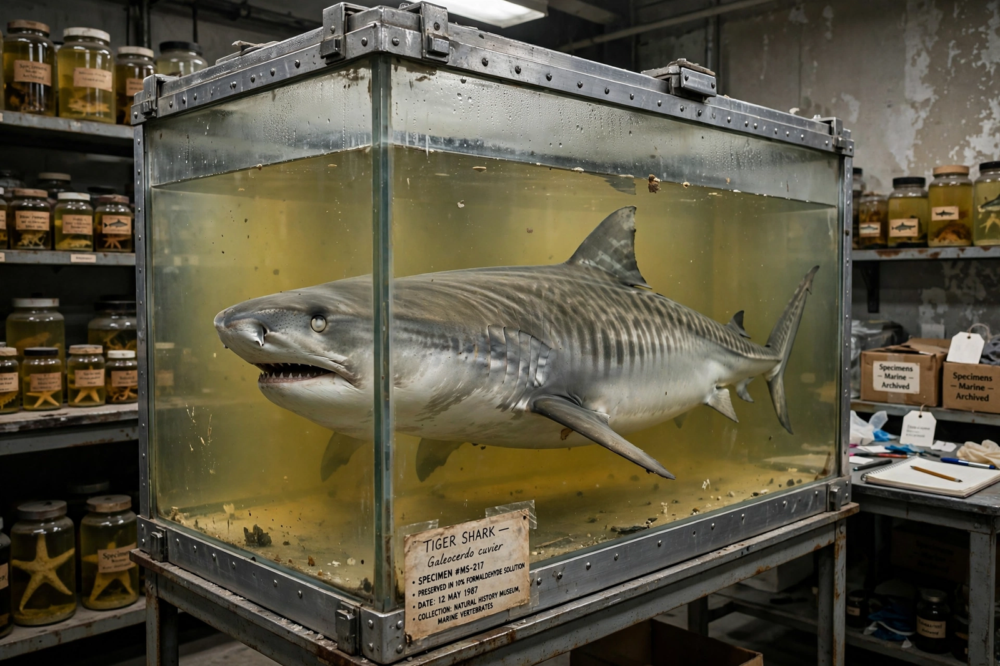

| Damien Hirst | |
| Born | Damien Steven Hirst, 7 June 1965, Bristol, England |
|---|---|
| Education | Goldsmiths, University of London |
| Known for | Installation art, sculpture, painting; animals in formaldehyde, spot and spin paintings |
| Movement | Young British Artists (YBAs) |
| Notable works | The Physical Impossibility of Death in the Mind of Someone Living (1991); For the Love of God (2007) |
| Awards | Turner Prize (1995) |

Damien Steven Hirst (born 7 June 1965) is an English artist, entrepreneur, and art collector. He emerged in the 1990s as the most prominent member of the Young British Artists (YBAs), who dominated the UK art scene with shock tactics and entrepreneurial flair. Death is the central theme of his work, most famously in a series of animals — including a shark, a sheep, and a cow — preserved in formaldehyde. He is among the world's richest living artists.
Hirst was born in Bristol and grew up in Leeds. He studied Fine Art at Goldsmiths College, London, and in 1988 curated the student exhibition Freeze in a Docklands warehouse — the show that launched the YBA generation and attracted collector Charles Saatchi, who became Hirst's patron.
The Physical Impossibility of Death in the Mind of Someone Living (1991), commissioned by Saatchi, consists of a tiger shark preserved in formaldehyde in a vitrine; it became an icon of 1990s British art. Mother and Child (Divided) (1993), a cow and calf bisected in tanks, helped win him the Turner Prize in 1995. His "spot paintings" — grids of colored circles, mostly executed by assistants — and "spin paintings" explore systems and chance. For the Love of God (2007) is a platinum cast of a human skull encrusted with 8,601 diamonds, reportedly sold for £50 million to a consortium in which Hirst himself held a stake.
In September 2008, bypassing his dealers, Hirst sold a complete show, "Beautiful Inside My Head Forever," by auction at Sotheby's for £111 million — on the day Lehman Brothers collapsed. Critics have charged that his factory-style production (works largely made by assistants) and market maneuvers subordinate art to commerce; supporters credit him with redefining the artist as entrepreneur. He has also faced plagiarism claims and criticism over animal deaths. In 2022 his project The Currency asked buyers of 10,000 NFTs to choose between keeping the token or the physical artwork, the other being burned.